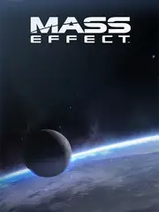

 |
|
| Tiempo de juego | 17m 19s |
| Última actividad | 21/12/2025 15:22:20 |
| Añadido | 17/11/2025 18:08:31 |
| Modificado | 17/11/2025 18:08:43 |
| Estado de finalización | Jugado |
| Librería | Playnite |
| Fuente | |
| Plataforma | PC (Windows) |
| Fecha de lanzamiento | 14/5/2021 |
| Puntuación de la Comunidad | 76 |
| Puntuación de la Crítica | |
| Puntuación de usuario | |
| Género | Adventure Role-playing (RPG) Shooter Strategy |
| Desarrollador | BioWare |
| Editor | Electronic Arts |
| Característica | Single Player |
| Enlaces | Steam |
| Tag | |
En el panteón de los RPGs de ciencia ficción, hay pocas sagas tan reverenciadas como esta. "Mass Effect" fue la obra con la que BioWare agarró todo lo que aprendió con KOTOR y lo disparó a la estratósfera. Es una space opera hecha videojuego, una aventura cinematográfica que te pone en el centro de una historia épica con consecuencias que repercuten en toda una galaxia.
Acá sos el Comandante Shepard, y por primera vez, tu personaje no es un avatar mudo. Tiene voz, tiene personalidad, y vos la moldeás. A través de la revolucionaria Rueda de Diálogo, definís si tu Shepard va a ser un héroe diplomático y honorable (Paragón) o un agente rudo y expeditivo que hace lo que sea necesario (Renegado).
La jugabilidad es una mezcla de RPG de acción en tercera persona con un shooter de coberturas. Reclutás a un pelotón de alienígenas y humanos, cada uno con su propia historia y habilidades, y los comandás en el campo de batalla. La exploración de planetas desconocidos con el vehículo Mako le daba una sensación de aventura y descubrimiento increíble.
Pero el verdadero corazón de Mass Effect es su universo y su narrativa. La historia de la lucha contra los Reapers es una de las más atrapantes de la ciencia ficción, y las relaciones que construís con tu tripulación son el ancla emocional del viaje. Es un juego que te hace tomar decisiones jodidas que tienen un peso real.
"Mass Effect" es el inicio de una de las mejores y más importantes trilogías de la historia de los videojuegos. Es una clase magistral de cómo construir un universo, desarrollar personajes memorables y contar una historia donde tus decisiones realmente importan. Una aventura espacial que te marca para siempre.